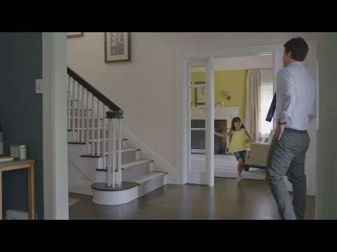

案例发生了什么

一名无法直播看球的父亲开车回家，一路躲避广播、路人、电子屏和球迷表情，想在完全不知道比分的情况下观看录像。
30 秒喜剧影片抓住“避剧透”；与 Boom 等短片组成 #BecauseFútbol 平台；Tumblr 征集球迷故事与艺术；时代广场户外和社交话题放大参与。
MARKETING KNOWLEDGE ROUTER · 营销知识路由器
营销启发卡
把历届经典的记忆点、商业结构和迁移方法放在同一层阅读。 卡片底部按主题连接全站相关案例、经典方法与深度文章。
核心动作
错过直播的焦虑、害怕剧透的紧张，以及球迷都经历过的生活狼狈；司机在回家路上拼命躲避任何可能泄露比分的人和屏幕。
传播与商业机制
汽车成为他穿越城市、赶回家庭观赛场景的空间；品牌没有炫耀赛场车队，而是进入一个真实球迷任务；30 秒喜剧影片抓住“避剧透”；与 Boom 等短片组成 #BecauseFútbol 平台；Tumblr 征集球迷故事与艺术；时代广场户外和社交话题放大参与。
可复用的方法
赞助汽车不一定讲接驳和性能；从球迷为了看球而做的荒诞行为出发，更容易让产品进入生活。
适用条件、风险与证据
- 情节对延时观看场景高度依赖；今天的移动推送更密集，复刻必须更新为新的信息环境与产品能力。
- 情节对延时观看场景高度依赖；今天的移动推送更密集，复刻必须更新为新的信息环境与产品能力。 后续复盘还应补齐发布主体、时间线、真实执行图、媒介范围和结果口径；没有这些证据时，不把行业评价或赛事总热度写成品牌增量。
资料与来源
官方资料与原始来源
市场 / 权益
美国 / 拉美
FIFA 世界杯官方汽车合作伙伴
创意打法
球迷痛点型；生活喜剧型；产品场景型
- iSpot 广告留存 · 2014-06-05Hyundai Because Fútbol: Avoidance
- MediaPost · 2014-06-11Hyundai launches #BecauseFutbol World Cup ads
- YouTube · 2014本页真实案例图片主源
来源按品牌/官方发布、官方账号留存、权威媒体、获奖案例库分层记录；品牌与奖项自报结果不视作独立审计。